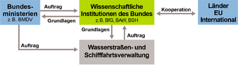

Unabhängigkeit und wissenschaftliches Vorgehen ermöglichen den Brückenschlag zwischen verschiedenen Interessen.
Unabhängigkeit und wissenschaftliches Vorgehen ermöglichen den Brückenschlag zwischen verschiedenen Interessen.
Im föderalen System der Bundesrepublik Deutschland teilen sich verschiedene Behörden von Bund und Ländern die Zuständigkeiten für Gewässer. Als wissenschaftliches Institut im Rang einer Bundesoberbehörde ist die BfG für Bundeswasserstraßen zuständig. Sie hat in dieser Position eine zentrale Vermittlungs- und Integrationsfunktion.
Unabhängigkeit und wissenschaftliches Vorgehen ermöglichen den Brückenschlag zwischen verschiedenen Interessen.
Wasserstraßen sind komplexe Gewässersysteme. Die Bundesanstalt für Gewässerkunde, angesiedelt im Geschäftsbereich des Bundesministeriums für Digitales und Verkehr (BMDV), wirkt dabei mit, sie nachhaltig und leistungsfähig zu gestalten. Als das wissenschaftliche Institut des Bundes für Forschung, Begutachtung und Beratung auf den Gebieten Hydrologie, Gewässernutzung, Gewässerbeschaffenheit, Ökologie und Gewässerschutz berät sie das BMDV, weitere Bundesministerien, die Wasserstraßen- und Schifffahrtsverwaltung (WSV) und Dritte.
Die BfG liefert wissenschaftlich-fachliche Grundlagen für die Arbeit von Ministerien und der Wasserstraßen- und Schifffahrtsverwaltung
Auftrag
Im Geschäftsbereich des Bundesministeriums für Digitales und Verkehr (BMDV) angesiedelt, ist es Aufgabe der BfG, zur Realisierung eines leistungsfähigen und umweltverträglichen Verkehrssystems beizutragen. Sie will durch die Verbesserung der nationalen Infrastruktur die Wirtschaftskraft fördern und so den Standort Deutschland stärken und im europäischen Kontext verankern.
Organisation
Die BfG verwirklicht das Themen- und Leistungsspektrum mit Hilfe der wissenschaftlichen Fachabteilungen und international ausgerichteten Organisationsstrukturen. Der IT-Bereich, die Verwaltung und das Controlling stellen dabei wesentliche Säulen für eine effiziente Leistungserbringung dar.
Leitgedanken
Die BfG verdichtet wissenschaftliche Erkenntnisse zu aussagekräftigen Szenarien und erarbeitet auf diese Weise fundierte Prognosen. Als moderne Oberbehörde des Bundes stellt sie sich der Aufgabe, die zukünftigen Nutzungsformen von Fließ- und Küstengewässern in Deutschland und Europa verantwortungsvoll und aktiv mitzugestalten.